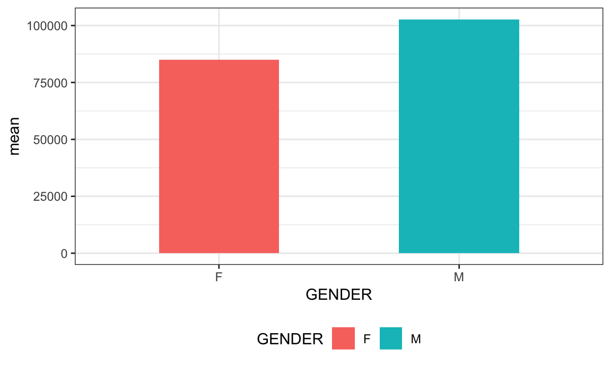
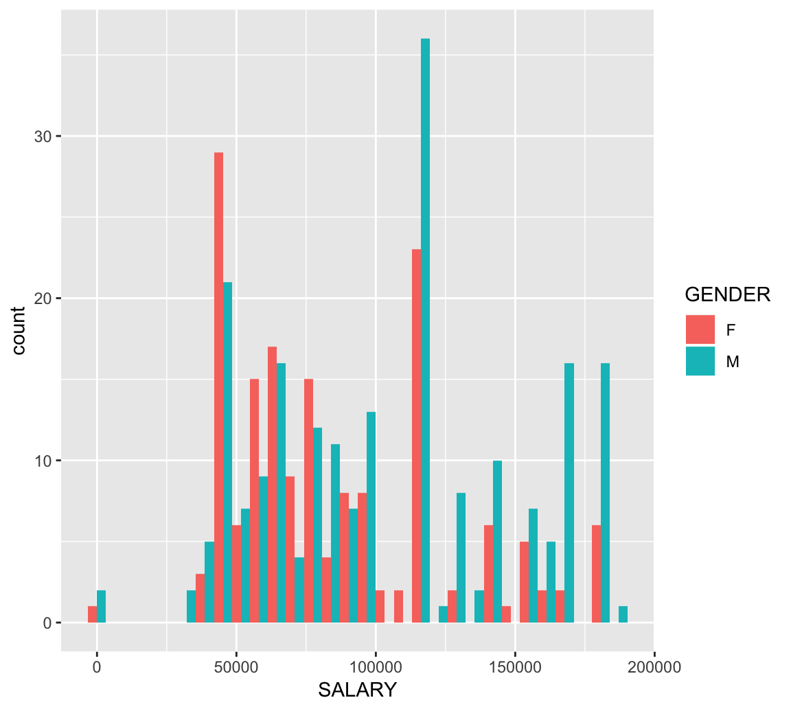
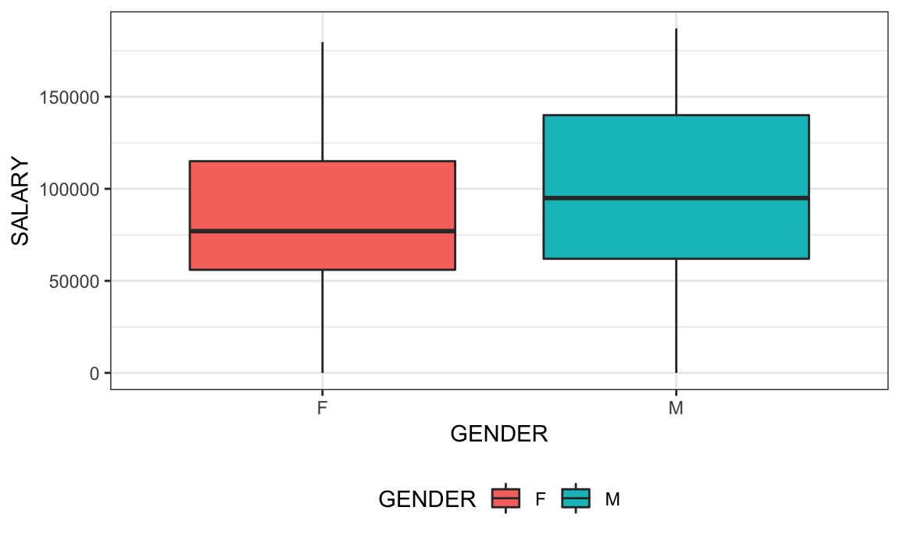
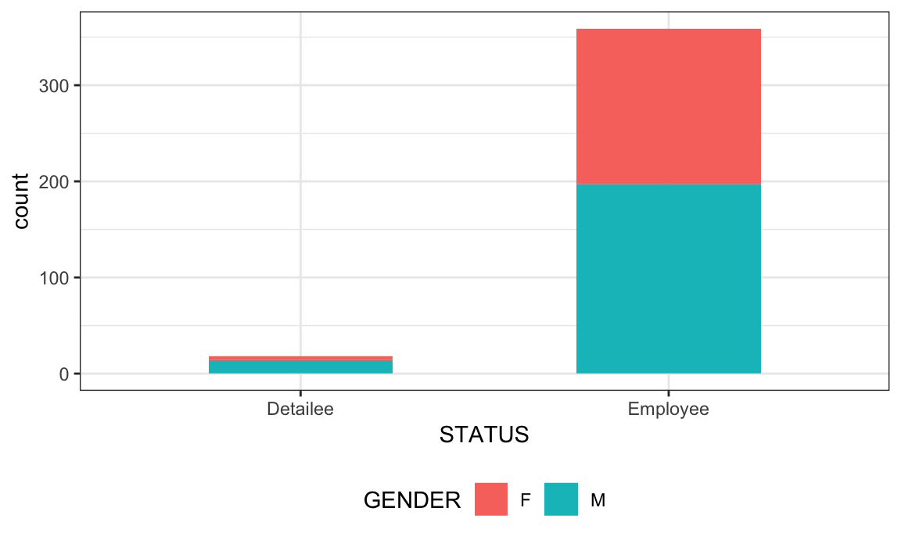
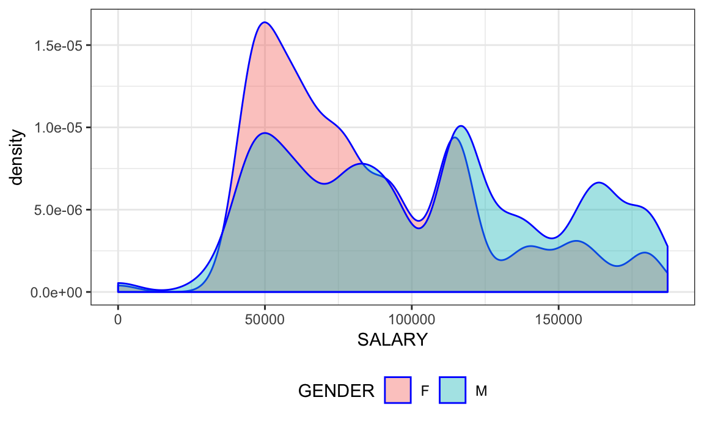
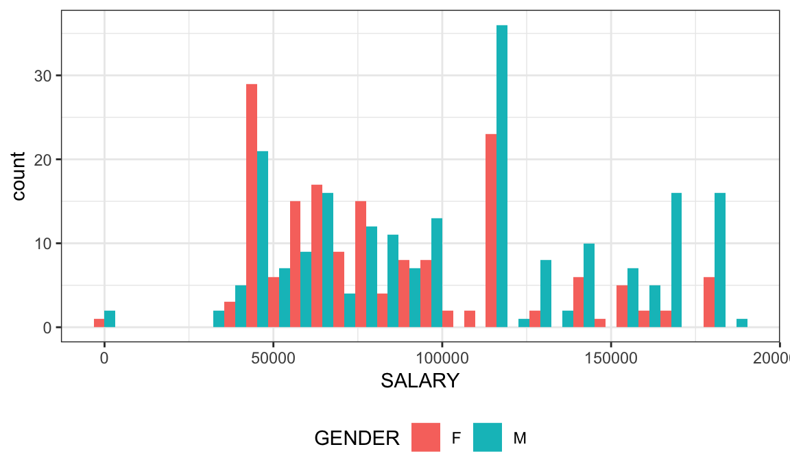

Loading tidyverse package and setting global options
Reading and cleaning the dataset
In 2017, the White House spent a total of $ 35766744 on the salaries of 377 employees.
Below is a table showing the top earner in the White House for 2017
| NAME | STATUS | SALARY | PAY BASIS | TITLE | GENDER |
|---|---|---|---|---|---|
| House, Mark S. | Detailee | 187100 | Per Annum | SENIOR POLICY ADVISOR | M |
Of the 153 staff earning more than $100,000 only 51 of them are female.
| GENDER | NUMBER |
|---|---|
| F | 115 |
| M | 109 |
Of the remaining 224 that earn less than $100,000, 115 of them are female. This include Ivanka Trump and her husband, Jared Kusner, and Reed Cordish all of whom have a salary of 0. Gary Cohn, millionare former CEO of Goldman Sachs has a salary of 30,000.
| GENDER | n |
|---|---|
| F | 166 |
| M | 211 |
| TITLE | GENDER | n |
|---|---|---|
| SPECIAL ASSISTANT TO THE PRESIDENT | M | 46 |
| SPECIAL ASSISTANT TO THE PRESIDENT | F | 31 |
| DEPUTY ASSISTANT TO THE PRESIDENT | M | 21 |
| ASSISTANT TO THE PRESIDENT | M | 20 |
| DIRECTOR | M | 18 |
| EXECUTIVE ASSISTANT | F | 18 |
| ASSOCIATE COUNSEL TO THE PRESIDENT | M | 12 |
| STAFF ASSISTANT | M | 11 |
| ASSOCIATE DIRECTOR | M | 10 |
| INFORMATION SERVICES OPERATOR | F | 9 |
| ASSOCIATE DIRECTOR | F | 8 |
| DEPUTY ASSISTANT TO THE PRESIDENT | F | 7 |
| RECORDS MANAGEMENT ANALYST | F | 7 |
| STAFF ASSISTANT | F | 7 |
| ASSISTANT TO THE PRESIDENT | F | 6 |
| DEPUTY ASSOCIATE DIRECTOR | M | 6 |
| DEPUTY DIRECTOR | M | 6 |
| DIRECTOR | F | 6 |
| DEPUTY DIRECTOR | F | 5 |
| OPERATIONS MANAGER | F | 5 |
| DEPUTY ASSOCIATE DIRECTOR | F | 4 |
| LEAD ADVANCE REPRESENTATIVE | M | 4 |
| PRESS ASSISTANT | F | 4 |
| REGIONAL DIRECTOR | M | 4 |
| SUPERVISOR | F | 4 |
| INFORMATION SERVICES OPERATOR | M | 3 |
| RECORDS MANAGEMENT ANALYST | M | 3 |
| REGIONAL DIRECTOR | F | 3 |
| SPECIAL ASSISTANT | F | 3 |
| SPECIAL ASSISTANT | M | 3 |
| ASSISTANT EXECUTIVE CLERK | M | 2 |
| ASSISTANT SUPERVISOR | F | 2 |
| ASSISTANT TO THE EXECUTIVE CLERK | F | 2 |
| ASSISTANT TO THE EXECUTIVE CLERK | M | 2 |
| CALLIGRAPHER | F | 2 |
| DEPUTY SOCIAL SECRETARY | F | 2 |
| ETHICS COUNSEL | F | 2 |
| EXECUTIVE ASSISTANT | M | 2 |
| IMMIGRATION ADVISOR | M | 2 |
| RESEARCH ANALYST | M | 2 |
| RESEARCH ASSOCIATE | F | 2 |
| RESEARCH ASSOCIATE | M | 2 |
| SCHEDULER | F | 2 |
| SENIOR POLICY ANALYST | M | 2 |
| WRITER FOR CORRESPONDENCE | M | 2 |
| ADVISOR TO THE PRESS SECRETARY | F | 1 |
| ASSISTANT PRESS SECRETARY | F | 1 |
| ASSISTANT PRESS SECRETARY | M | 1 |
| ASSISTANT STAFF SECRETARY | F | 1 |
| ASSISTANT STAFF SECRETARY | M | 1 |
| ASSISTANT SUPERVISOR | M | 1 |
| ASSISTANT TO THE OFFICE OF AMERICAN INNOVATION | F | 1 |
| ASSOCIATE COUNSEL TO THE PRESIDENT | F | 1 |
| CHIEF CALLIGRAPHER | F | 1 |
| COMMUNICATIONS ASSISTANT | M | 1 |
| COMMUNICATIONS COORDINATOR | F | 1 |
| EDUCATION ADVISOR | M | 1 |
| ETHICS COUNSEL | M | 1 |
| EXECUTIVE CLERK | M | 1 |
| EXECUTIVE DIRECTOR FOR WHITE HOUSE COUNCIL ON NATIVE AMERICAN AFFAIRS | M | 1 |
| FINANCE AND LOGISTICS OFFICER | F | 1 |
| FIRST DAUGHTER AND ADVISOR TO THE PRESIDENT | F | 1 |
| INTERIM CHIEF DIGITAL OFFICER | M | 1 |
| LABOR ADVISOR | M | 1 |
| LEAD PRESS REPRESENTATIVE | F | 1 |
| LEAD PRESS REPRESENTATIVE | M | 1 |
| LEGAL ASSISTANT | M | 1 |
| LEGISLATIVE ASSISTANT | M | 1 |
| PERSONAL AIDE | M | 1 |
| POLICY ADVISOR | F | 1 |
| POLICY ADVISOR | M | 1 |
| PRESIDENTIAL SUPPORT SPECIALIST | F | 1 |
| PRESIDENTIAL SUPPORT SPECIALIST | M | 1 |
| PRODUCTION ASSISTANT | F | 1 |
| PROJECT MANAGER | F | 1 |
| RESEARCH ANALYST | F | 1 |
| RESEARCH ASSISTANT | M | 1 |
| SENIOR DIGITAL STRATEGIST | F | 1 |
| SENIOR DIGITAL STRATEGIST | M | 1 |
| SENIOR DIRECTOR FOR CABINET AFFAIRS | F | 1 |
| SENIOR DIRECTOR FOR CABINET AFFAIRS | M | 1 |
| SENIOR DIRECTOR OF SCHEDULING | F | 1 |
| SENIOR LEAD PRESS REPRESENTATIVE | F | 1 |
| SENIOR POLICY ADVISOR | M | 1 |
| SENIOR PRESS ASSISTANT | F | 1 |
| SENIOR PRESS ASSISTANT | M | 1 |
| SENIOR RECORDS MANAGEMENT ANALYST | M | 1 |
| SENIOR TRIP COORDINATOR | M | 1 |
| SENIOR WRITER FOR CORRESPONDENCE | F | 1 |
| SPECIAL PROJECTS MANAGER | M | 1 |
| SPEECHWRITER | F | 1 |
| STENOGRAPHER | F | 1 |
| STENOGRAPHER | M | 1 |
| SUPERVISOR | M | 1 |
| TRAVEL MANAGER | F | 1 |
| TRAVEL MANAGER | M | 1 |
| TRIP COORDINATOR | M | 1 |
| WEST WING RECEPTIONIST | F | 1 |
| GENDER | n | mean | median |
|---|---|---|---|
| F | 166 | 84885.53 | 77000 |
| M | 211 | 102728.65 | 95000 |
